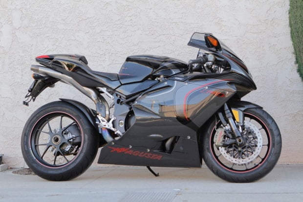

La MV Augusta F4CC, las siglas CC representan las iníciales de Claudio Castiglioni.La marca decidió producir sólo 100 unidades,su precio es de aproximadamente 100 mil euros. La moto exclusiva fue diseñada por MassimoTamburini y tiene un peso de 187 kilos. Cuenta con un motor tetracilíndrico de 1.078 cc capaz de entregar 203 caballos de potencia y alcanzar 315 km/h. La MV Agusta F4 CC a simple vista cuenta con fibra de carbono, un sistema de escape y motor con piezas de titanio, así como un asiento de cuero Alcántara.
